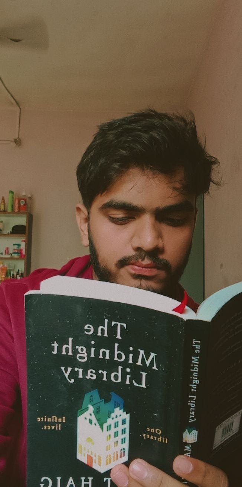

Omkar Patil

Objective
- Myself Omkar Patil studying in SSPM COE at Kankavli,in Computer Science dept~AIML branch
- I've been Creative in my school times and participateed in many art competitions also appeared for NATA Examination and secured 140+ marks.
- The goal of informing this things is to explain how my creativity would help in creating stunning websites and carryout other tasks in diffrent creative ways.
Education
-
Bachelor of Engineering in Computer Science
Sindhudurg Shikshan Prasarak Mandal's College Of Engineering,
Tal:Kankavli, Dist.:Sindhudurg
Expected Graduation: May 2026
Relevant Coursework: Algorithms, Data Structures, Software Engineering
GPA: 6.8/7
-
Junior College (12th Grade)
Dr.D.Y.P. Jr.College,Salokhenagar,
Kolhapur,Maharashtra.
Stream:Science
Graduated: August 2022
Key Subjects: Physics,Chemistry,Mathematics
Percentage/Grade: 80%
-
High School (10th Grade)
Saint Alphonsa Convent School
Kolhapur,Maharashtra
Graduated: May 2020
Percentage/Grade: 92%
Work Experience
I'm an fresher right now but am sure I would give my best in this work.
Skills
- HTML
- CSS
- JS
- Sketching
- Editing
Awards and achievements
'A' grade in Elimentary and Intermidiate Drawing Examination